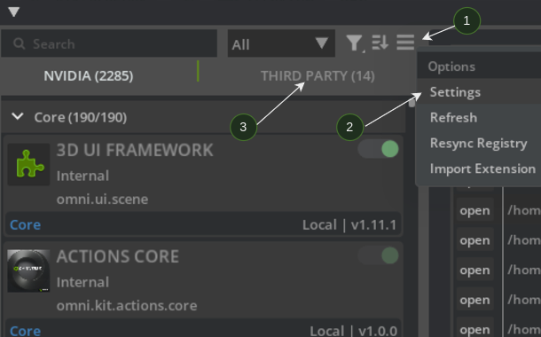
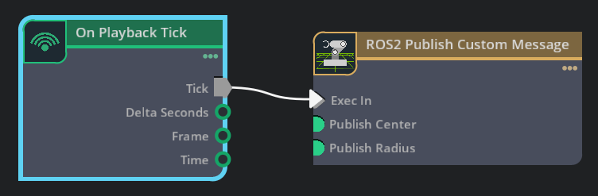

ROS 2 自定义 C++ OmniGraph 节点#
学习目标#
在本示例中，您将学习如何：
编写用于 Isaac Sim 的自定义 C++ OmniGraph 节点。
注意
本教程仅支持 Linux 系统上的 ROS 2 Jazzy。
入门指南#
先决条件
对构建 ROS 2 软件包有基本的了解。
构建自定义消息软件包#
要在 Isaac Sim 中使用自定义消息，必须使用 ROS 2 构建自定义消息软件包。请遵循官方 ROS 2 文档中的自定义消息示例。消息定义（Sphere.msg 文件）如下：
geometry_msgs/Point center
float64 radius
请按照 ROS 2 Jazzy 文档中关于创建自定义 msg 和 srv 文件的说明进行操作。
注意
您只需完成至子章节 6. 确认 msg 和 srv 创建 的步骤。
重要
请遵循官方教程中提供的软件包和消息命名术语；这在构建您自己的 C++ OmniGraph 节点时非常重要。
设置扩展 C++ 模板#
要使用自定义 ROS 2 OmniGraph 节点，您必须构建自己的扩展，其中包含必要的 C++ 代码。为此，我们将使用 Isaac Sim 仓库。
按照 快速入门 部分中描述的说明，从 GitHub 克隆并构建 Isaac Sim 仓库。
确保位于
_build/linux-*/release文件夹中的isaac-sim.sh脚本按预期工作。使用
./repo.sh template new命令创建一个新的 Isaac Sim OmniGraph Node Extension 模板。使用箭头键选择或根据以下值填写提示：
? 您是否接受管理条款？
Yes? 使用箭头键选择您要创建的内容：
Extension? 使用箭头键选择所需的模板：
[isaacsim-omnigraph-extension]: Isaac Sim OmniGraph Node Extension? 输入扩展名称 [带命名空间，小写，字母数字]：
custom.cpp.ros2_node? 输入标题：
ROS 2 C++ Custom OmniGraph Node? 输入版本：
0.1.0? 输入描述：
A new Isaac Sim OmniGraph node extension.? 输入类别：
Simulation
回答完提示后，模板将在
source/extensions/custom.cpp.ros2_node路径中创建。编辑
deps/kit-sdk-deps.packman.xml文件，在</project>结束标签之前添加以下行：<dependency name="system_ros" linkPath="../_build/target-deps/system_ros" tags="${config}"> <source path="<FULL_PATH_TO_THE_ROS_2_INSTALL>" /> </dependency> <dependency name="additional_ros_workspace" linkPath="../_build/target-deps/additional_ros" tags="${config}"> <source path="<FULL_PATH_TO_WORKSPACE_CREATED_ABOVE>/install/tutorial_interfaces" /> </dependency>
根据本地环境设置更新源
path。例如：<FULL_PATH_TO_THE_ROS_2_INSTALL>:/opt/ros/jazzy<FULL_PATH_TO_WORKSPACE_CREATED_ABOVE>:/home/user/ros2_ws
这确保了
premake5.lua文件能够在您的系统上找到相关的 ROS 2 头文件和库。构建自定义节点时需要这些文件。编辑
source/extensions/custom.cpp.ros2_node/premake5.lua文件以包含自定义消息包的标头文件和库。扩展
includedirs定义（位于-- C++ Carbonite plugin部分下），以包含系统级 ROS 包含文件和额外已源化的 ROS 工作区包含文件。添加libdirs和links定义，以便链接 ROS 2 C API 库以及带有其库的自定义消息。includedirs { "%{root}/source/extensions/custom.cpp.ros2_node/include", -- System level ROS includes "%{target_deps}/system_ros/include/builtin_interfaces", "%{target_deps}/system_ros/include/geometry_msgs", "%{target_deps}/system_ros/include/rcl", "%{target_deps}/system_ros/include/rcl_yaml_param_parser", "%{target_deps}/system_ros/include/rcutils", "%{target_deps}/system_ros/include/rmw", "%{target_deps}/system_ros/include/rosidl_dynamic_typesupport", "%{target_deps}/system_ros/include/rosidl_runtime_c", "%{target_deps}/system_ros/include/rosidl_typesupport_interface", "%{target_deps}/system_ros/include/service_msgs", "%{target_deps}/system_ros/include/std_msgs", "%{target_deps}/system_ros/include/type_description_interfaces", -- Additional sourced ROS workspace includes "%{target_deps}/additional_ros/include/tutorial_interfaces", } libdirs { -- System level ROS libraries "%{target_deps}/system_ros/lib", -- Additional sourced ROS workspace libraries "%{target_deps}/additional_ros/lib", } links{ -- Minimal ROS 2 C API libs needed for your nodes to work "rosidl_runtime_c", "rcutils", "rcl", "rmw", -- Add dependencies of the custom message with its libs "geometry_msgs__rosidl_typesupport_c", "geometry_msgs__rosidl_typesupport_c", "tutorial_interfaces__rosidl_typesupport_c", "tutorial_interfaces__rosidl_generator_c", }
在
source/extensions/custom.cpp.ros2_node/nodes文件夹中，按照以下规范创建ROS2CustomMessageNode.ogn定义文件和ROS2CustomMessageNode.cpp源代码文件。ROS2CustomMessageNode.ogn#{ "ROS2CustomMessageNode": { "version": 1, "icon": "icons/isaac-sim.svg", "description": [ "This node publishes a custom message with a ROS 2 OG node" ], "metadata": { "uiName": "ROS2 Publish Custom Message" }, "categories": ["tutorials"], "inputs": { "execIn": { "type": "execution", "description": "The input execution port." }, "publishCenter": { "type": "float[3]", "description": "Center co-ordinates to publish in order [x, y, z]", "default" : [0.0, 0.0, 0.0] }, "publishRadius": { "type": "float", "description": "Value of radius to publish", "default" : 1.5 } } } }
ROS2CustomMessageNode.cpp#// SPDX-FileCopyrightText: Copyright (c) 2026 NVIDIA CORPORATION & AFFILIATES. All rights reserved. // SPDX-License-Identifier: Apache-2.0 // // Licensed under the Apache License, Version 2.0 (the "License"); // you may not use this file except in compliance with the License. // You may obtain a copy of the License at // // http://www.apache.org/licenses/LICENSE-2.0 // // Unless required by applicable law or agreed to in writing, software // distributed under the License is distributed on an "AS IS" BASIS, // WITHOUT WARRANTIES OR CONDITIONS OF ANY KIND, either express or implied. // See the License for the specific language governing permissions and // limitations under the License. #include <ROS2CustomMessageNodeDatabase.h> #include <string> // In this example, we will publish a string message with an OmniGraph Node #include "tutorial_interfaces/msg/sphere.h" // ROS includes for creating nodes, publishers etc. #include "rcl/rcl.h" // Helpers to explicit shorten names you know you will use using omni::graph::core::Type; using omni::graph::core::BaseDataType; class ROS2CustomMessageNode { public: static bool compute(ROS2CustomMessageNodeDatabase& db) { auto& state = db.internalState<ROS2CustomMessageNode>(); if(!state.pub_created) { state.context = rcl_get_zero_initialized_context(); state.init_options = rcl_get_zero_initialized_init_options(); state.allocator = rcl_get_default_allocator(); rcl_ret_t rc; // create init_options rc = rcl_init_options_init(&state.init_options, state.allocator); if (rc != RCL_RET_OK) { printf("Error rcl_init_options_init.\n"); return false; } // create context rc = rcl_init(0, nullptr, &state.init_options, &state.context); if (rc != RCL_RET_OK) { printf("Error in rcl_init.\n"); return false; } // create rcl_node state.my_node = rcl_get_zero_initialized_node(); state.node_ops = rcl_node_get_default_options(); rc = rcl_node_init(&state.my_node, "node_0", "custom_node", &state.context, &state.node_ops); if (rc != RCL_RET_OK) { printf("Error in rcl_node_init\n"); return false; } const char * topic_name = "sphere_msg"; const rosidl_message_type_support_t * my_type_support = ROSIDL_GET_MSG_TYPE_SUPPORT(tutorial_interfaces, msg, Sphere); state.pub_options = rcl_publisher_get_default_options(); // Initialize Publisher rc = rcl_publisher_init( &state.my_pub, &state.my_node, my_type_support, topic_name, &state.pub_options); if (RCL_RET_OK != rc) { printf("Error in rcl_publisher_init %s.\n", topic_name); return false; } // Node, publisher was successfully created state.pub_created = true; return true; } tutorial_interfaces__msg__Sphere* ros_msg = tutorial_interfaces__msg__Sphere__create(); // Set the center of the sphere with the input to the OG node ros_msg->center.x = db.inputs.publishCenter()[0]; ros_msg->center.y = db.inputs.publishCenter()[1]; ros_msg->center.z = db.inputs.publishCenter()[2]; // Set the radius of the sphere to the input radius ros_msg->radius = db.inputs.publishRadius(); rcl_ret_t rc; rc = rcl_publish(&state.my_pub, ros_msg, NULL); if (rc != RCL_RET_OK) { // RCL_RET_PUBLISHER_INVALID is returned initially and then the message gets published return false; } // Destroy the ROS message published to release the memory it used tutorial_interfaces__msg__Sphere__destroy(ros_msg); // Returning true tells Omnigraph that the compute was successful and the output value is now valid. return true; } static void releaseInstance(NodeObj const& nodeObj, GraphInstanceID instanceId) { auto& state = ROS2CustomMessageNodeDatabase::sPerInstanceState<ROS2CustomMessageNode>(nodeObj, instanceId); // Remove Publisher rcl_ret_t rc = rcl_publisher_fini(&state.my_pub, &state.my_node); if (rc != RCL_RET_OK) { printf("Failed to finalize publisher: %d\n", rc); } // Remove Node rc = rcl_node_fini(&state.my_node); if (rc != RCL_RET_OK) { printf("Failed to finalize node: %d\n", rc); } state.pub_created = false; } private: rcl_publisher_t my_pub; rcl_node_t my_node; rcl_context_t context; rcl_node_options_t node_ops; rcl_init_options_t init_options; rcl_allocator_t allocator; rcl_publisher_options_t pub_options; bool pub_created {false}; }; // This macro provides the information necessary to OmniGraph that lets it automatically register and deregister // your node type definition. REGISTER_OGN_NODE()
rclROS 2 API 用于在 OmniGraph 节点中创建和操作 ROS 2 组件：在 C++ 节点中，当
Exec In条件为真时会调用compute()，节点和发布者在此处进行初始创建。消息也在此函数中发布。
运行
./build.sh以构建包含 ROS 2 OmniGraph 节点的新扩展。构建后的扩展将位于
_build/linux-*/release/exts文件夹中。注意
在 Python 存根生成 构建后步骤中产生的以下错误消息可以安全忽略。 这些错误发生的原因是执行构建的终端中未源化 ROS 2；因此，在生成 Python 存根文件（类型提示和函数/类签名）时无法加载动态库。
running kit for python stubs generation... ... [Error] [carb] [Plugin: libcustom.cpp.ros2_node.plugin.so] Could not load the dynamic library from ...exts/custom.cpp.ros2_node/bin/libcustom.cpp.ros2_node.plugin.so. Error: librcutils.so: cannot open shared object file: No such file or directory... [Warning] [carb] Potential plugin preload failed: ...exts/custom.cpp.ros2_node/bin/libcustom.cpp.ros2_node.plugin.so [Error] [omni.ext.plugin] [ext: custom.cpp.ros2_node-0.1.0] failed to load native plugin: ...exts/custom.cpp.ros2_node/bin/libcustom.cpp.ros2_node.plugin.so
将扩展添加到 Isaac Sim#
要将扩展及相应节点添加到 Isaac Sim：
源化 ROS 2 安装以及包含上述
tutorial_interfaces包的本地 ROS 2 工作空间。source /opt/ros/jazzy/setup.bash
source install/local_setup.bash
在此终端中运行 Isaac Sim。
转到 Window > Extensions 并搜索
custom.cpp.ros2_node扩展。然后通过切换开关启用它。注意
如果您希望在不同于构建该扩展时所使用的 Isaac Sim 应用程序中使用该扩展，请按照以下步骤使该扩展在新应用程序中可用：
转到 Window > Extensions，在搜索栏右侧（位于 Third Party 选项卡正上方）找到汉堡菜单 (1)。点击 Settings (2)。
点击 Extension Search Paths 下的
+图标，并添加上一节中构建的扩展的路径（您构建的扩展位于_build/linux-*/release/exts下）。验证您的扩展是否位于 Third Party 选项卡下 (3)。然后，通过切换开关启用该扩展。


构建 Action Graph 并运行节点#
启用 custom.cpp.ros2_node 扩展后，创建一个包含新 ROS 2 节点的 ActionGraph：
转到 Window > Graph Editors > Action Graph 并创建一个 New Action Graph。
在 Action Graph 选项卡中搜索
ROS 2，将ROS2 Publish Custom Message节点拖入图中。搜索
Playback Tick并将其拖入图中。将
On Playback Tick节点的Tick连接到 ROS 2 节点的Exec In。

点击场景上的 Play，节点开始向 ROS 2 发布数据。
通过打开新终端并在其中 source ROS 2 和本地工作区来验证发布情况。
运行
ros2 topic list以验证/custom_node/sphere_msg话题是否可用。 此外，运行ros2 topic echo /custom_node/sphere_msg以显示发布的消息。

总结#
本教程涵盖了以下主题：
构建您自己的扩展，其中包含 ROS 2 C++ OmniGraph 节点
在 Isaac Sim 中使用这些节点
后续步骤#
继续浏览 ROS 2 文档系列的下一页，URDF Importer Extension，了解如何将 URDF 机器人描述导入 Isaac Sim。